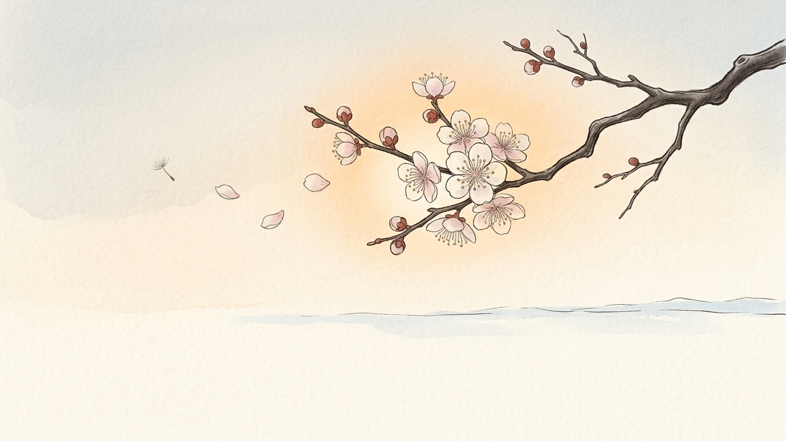
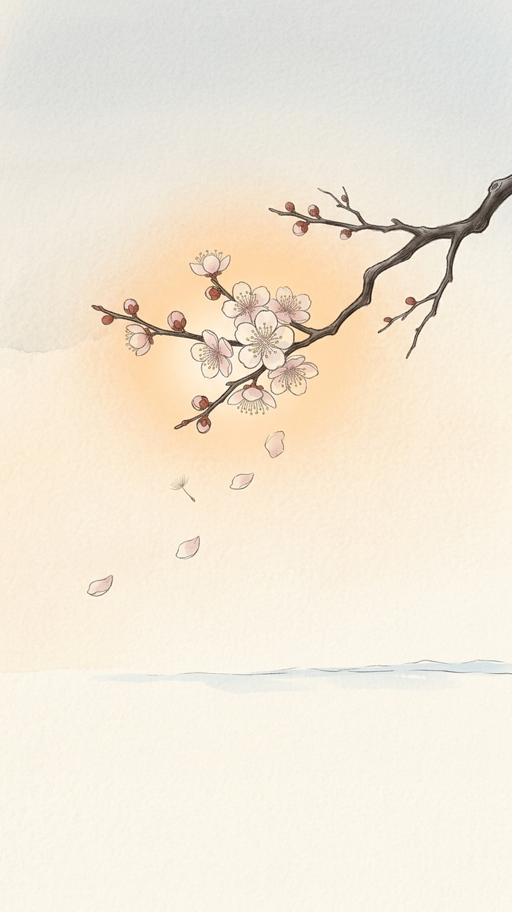

In-App Event, 22 December 2026 to 20 January 2027, by each phone's local date. Version 1.0.3.


The icon, landscapes, flowers and event art were generated with AI, then selected, edited and composited by the developer.
Winter Plum Blossom. Whatever you blow, each pause brings home an extra plum seed. Its pot stays in the garden; the seeds return next winter.
一盆冬梅。 从一年里夜最长的那天起，不管吹的是哪一个，都会多带回一颗梅花的种子。梅花在花园里有自己的一盆，会一直留着；明年冬至，种子还会再来。
一盆冬梅。 從一年裡夜最長的那天起，不管吹的是哪一個，都會多帶回一顆梅花的種子。梅花在花園裡有自己的一盆，會一直留著；明年冬至，種子還會再來。
冬の梅。 一年でいちばん夜が長い日から、どれを吹いても、梅の種がもうひとつ届きます。庭には梅だけの鉢ができて、ずっと残ります。来年の冬至には、また種が届きはじめます。
겨울 매화. 일 년 중 밤이 가장 긴 날부터, 무엇을 불든 매화 씨앗이 하나 더 찾아와요. 정원에 매화만의 화분이 생기고 계속 남아요. 내년 동지에 씨앗이 다시 와요.
Pflaumenblüte im Winter. Jede Pause bringt einen Samen der Pflaumenblüte dazu. Ihr eigener Topf bleibt; nächsten Winter kommen die Samen wieder.